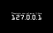
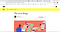
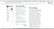
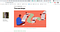
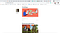

The best tech for Nerds not for metrics



here is what will see If you click on this article using a computer not a smartphone
with is you just can read the title and know about me but all of this is about you and you already consumed the title and the picture before landing here and one of them probably interested you enough to click for reading so you are here with your computer reading. But before reading you took 3 seconds for scrolling this first screen served to you that I am describing. This 3 second is of value for those who are competing for stealing your attention. They achieve it by doing simple tricks like that and are hustling for gaining some seconds of visit time duration. But You nerds of technology should be served and your attention is so valuable that I won’t see someone steal it that’s the main reason for this article. Try to find the best page configuration, template, UI that gives you a better reading experience, not design for gaining metrics and rankings and ads revenues but for knowledge and ideas because it is personal, not business-driven. it is for people Like you and me. For nerds, geeks, tech people. I could say for everybody but because being specific is better, this is for nerds certainly.
Designed this page title Next block like it is actually but Here is the first screen that is better to see once you access it

Left like this because without the first picture of this nerd sitting and writing with a computer no featured picture on the listing article page like this below`

Reduced screen zoom for you to see the listing of articles

For the listing of articles also there are other interesting design choices that worth understanding by you but They will be in another article. These ideas about the listing of the article are like a key solution about the presentation of book covers on books online stores pinned by Seth Godin years ago when experimenting with a book publishing startup, domino project, and applied the idea with the cover of the book poke the box. It happens that nerds can apply it also for blogging